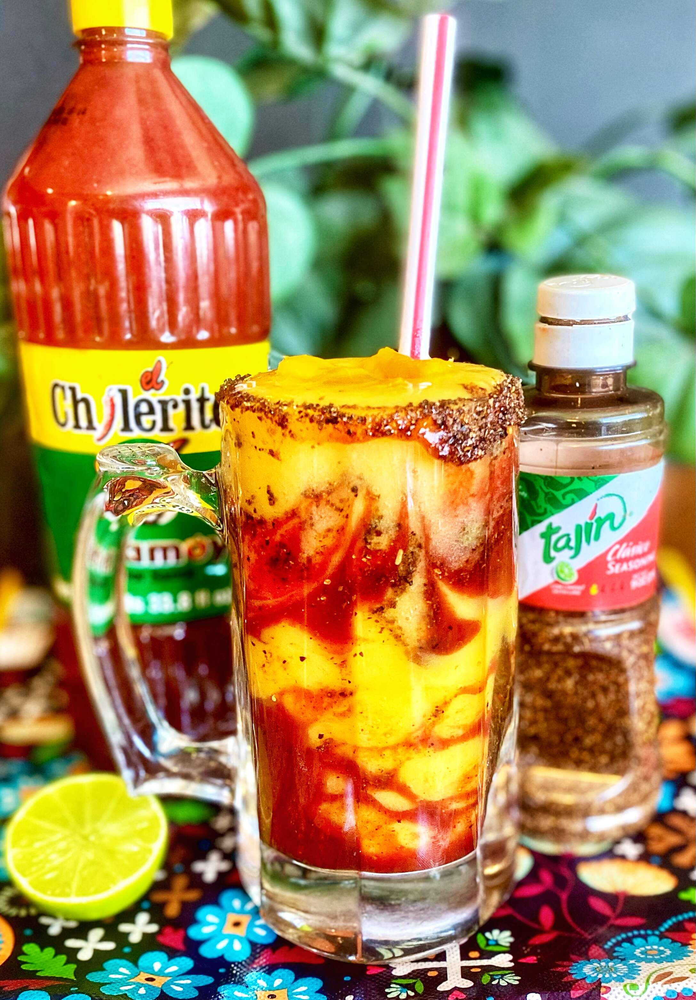

Mangonada Recipe

Mangonadas are similar to smoothies. They are sweet, salty, tart, and fruity.
A definite cool-down drink for those hot summer days.
And a great way to use up fresh ripe mangos.
Ingredients
- 1 cup Mango chunks, frozen
- ¾ cup water
- ½ medium lime, juiced
- 1 tablespoon chamoy (Mexican chili fruit condiment)
- 1 teaspoon chili-lime seasoning (such as Tajin®)
- 2 tablespoons diced fresh mango
Directions
- Place 1 teaspoon chamoy on a plate. Place 1 teaspoon chili-lime seasoning
on another plate. Dip rim of glass first in chamoy, then in chili-lime seasoning. Set aside.
- Combine frozen mango, water, and lime juice in a blender; blend until smooth.
- Place 1/2 tablespoon chamoy in the bottom of the glass. Add 1/2 teaspoon
chili-lime seasoning and 1/2 of the blended mangoes. Repeat layers
and top with diced fresh mango.
Return to main page